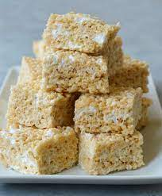

Rice Krispie Treats

How To Make Rice Krispe Treats
Ingredients
- 3 tablespoons of butter
- 1 Package of marshmallows
- 6 cups of Rice Krispies cereal
Steps
- In a large saucepan melt butter over low heat
- Add Rice Krispies cereal, sit until will coated
- Using wax paper evenly press mixture into a 13x9x2 inch pan, coated with cooking spray
- Allow to cool, then serve